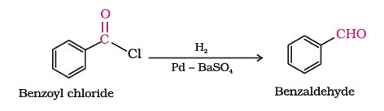
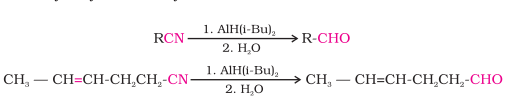
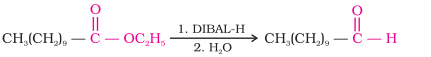
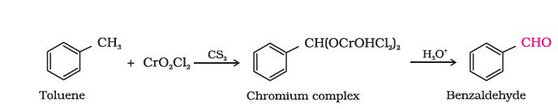
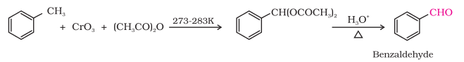
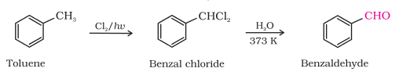
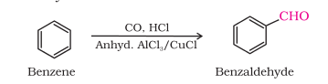
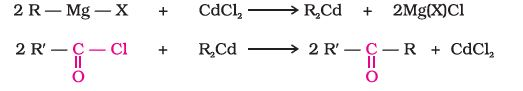
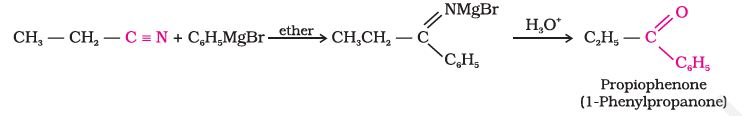
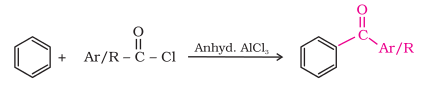

Some important methods for the preparation of aldehydes and ketones are as follows:
1. By oxidation of alcohols
Aldehydes and ketones are generally prepared by oxidation of primary and secondary alcohols, respectively (Unit 11, Class XII).
2. By dehydrogenation of alcohols
This method is suitable for volatile alcohols and is of industrial application. In this method alcohol vapours are passed over heavy metal catalysts (Ag or Cu). Primary and secondary alcohols give aldehydes and ketones, respectively (Unit 11, Class XII).
3. From hydrocarbons
(i) By ozonolysis of alkenes: As we know, ozonolysis of alkenes followed by reaction with zinc dust and water gives aldehydes, ketones or a mixture of both depending on the substitution pattern of the alkene (Unit 13, Class XI).
(ii) By hydration of alkynes: Addition of water to ethyne in the presence of H2SO4 and HgSO4 gives acetaldehyde. All other alkynes give ketones in this reaction (Unit 13, Class XI).
1. From acyl chloride (acid chloride)
Acyl chloride (acid chloride) is hydrogenated over catalyst, palladium on barium sulphate. This reaction is called Rosenmund reduction.

2. From nitriles and esters
Nitriles are reduced to corresponding imine with stannous chloride in the presence of hydrochloric acid, which on hydrolysis give corresponding aldehyde.This reaction is called Stephen reaction.

Similarly, esters are also reduced to aldehydes with DIBAL-H.

3. From hydrocarbons
Aromatic aldehydes (benzaldehyde and its derivatives) are prepared from aromatic hydrocarbons by the following methods:(i) By oxidation of methylbenzene
Strong oxidising agents oxidise toluene and its derivatives to benzoic acids. However, it is possible to stop the oxidation at the aldehyde stage with suitable reagents that convert the methyl group to an intermediate that is difficult to oxidise further. The following methods are used for this purpose. (a) Use of chromyl chloride (CrO2Cl2): Chromyl chloride oxidises methyl group to a chromium complex, which on hydrolysis gives corresponding benzaldehyde.
This reaction is called Etard reaction.
(b) Use of chromic oxide (CrO3): Toluene or substituted toluene is converted to benzylidene diacetate on treating with chromic oxide in acetic anhydride. The benzylidene diacetate can be hydrolysed to corresponding benzaldehyde with aqueous acid.
(ii) By side chain chlorination followed by hydrolysis
Side chain chlorination of toluene gives benzal chloride, which on hydrolysis gives benzaldehyde. This is a commercial method of manufacture of benzaldehyde.
(iii) By Gatterman – Koch reaction
When benzene or its derivative is treated with carbon monoxide and hydrogen chloride in the presence of anhydrous aluminium chloride or cuprous chloride, it gives benzaldehyde or substituted benzaldehyde.
This reaction is known as Gatterman-Koch reaction.
1. From acyl chlorides
Treatment of acyl chlorides with dialkylcadmium, prepared by the reaction of cadmium chloride with Grignard reagent, gives ketones.

2. From nitriles
Treating a nitrile with Grignard reagent followed by hydrolysis yields a ketone.
3. From benzene or substituted benzenes
When benzene or substituted benzene is treated with acid chloride in the presence of anhydrous aluminium chloride, it affords the corresponding ketone. This reaction is known as Friedel-Crafts acylation reaction.
Example 12.1
Give names of the reagents to bring about the following transformations:
(i) Hexan-1-ol to hexanal (ii) Cyclohexanol to cyclohexanone (iii) p-Fluorotoluene to (iv) Ethanenitrile to ethanal p-fluorobenzaldehyde (v) Allyl alcohol to propenal (vi) But-2-ene to ethanalSolution
(i) C5H5NH+CrO3Cl-(PCC) (ii) K2Cr2O7 in acidic medium
(iii) CrO3 in the presence
(iv) (Diisobutyl)aluminium of acetic anhydride/ hydride (DIBAL-H) 1. CrO2Cl2 2. HOH
(v) PCC (vi) O3/H2O-Zn dust